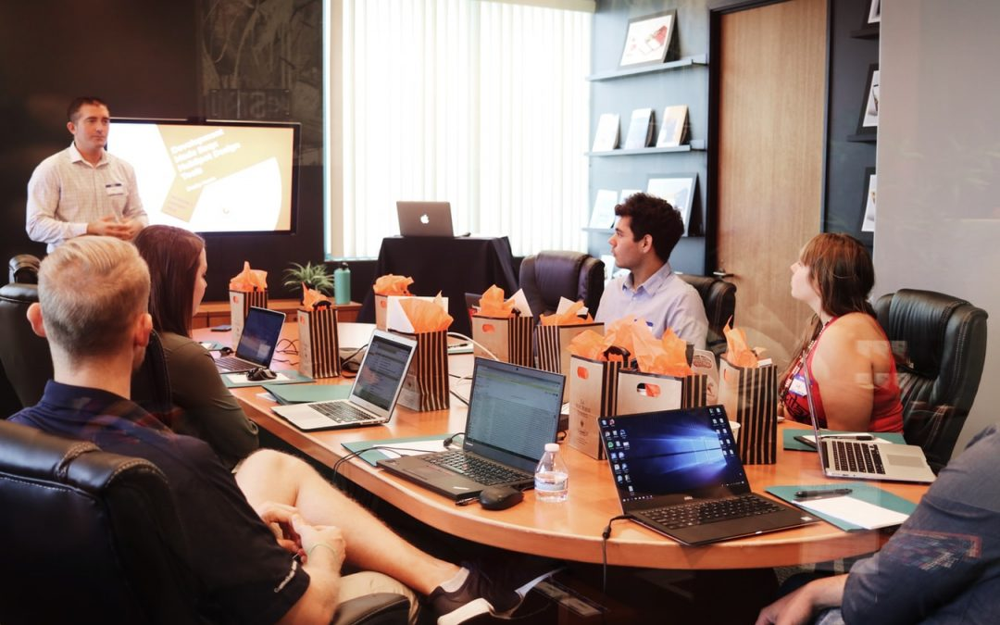

Esta se podria decir que es una disciplina que busca planificar, organizar y supervisar actividades para alcanzar los objetivos específicos dentro de un tiempo, costo y alcance definidos. Implica un enfoque estructurado que permite a las organizaciones optimizar sus recursos y minimizar los riesgos mientras se cumplen las expectativas de los interesados. A continuación, se describen las principales etapas y procesos involucrados en esta práctica.
1. Inicio De Proyecto
Es la etapa en la que se define el propósito y alcance general del proyecto. Se establece la base para determinar si el proyecto es viable.
Procesos clave:
- Identificar los interesados
- Definir el objetivo principal del proyecto.
- Desarrollar el acta de constitución del proyecto, que documenta los objetivos, alcance inicial, principales interesados y recursos iniciales.
Resultado clave: Un analisis Decisivo para continuar o no con el proyecto.
2. Planificacion
Se desarrolla un plan detallado que sirva como una guía para la ejecución y el control del proyecto. Es una las etapas más críticas, ya que establece las bases para llevar al éxito el proyecto.
Procesos clave:
- Definir el alcance detallado del proyecto.
- Crear el cronograma de actividades.
- Establecer el presupuesto.
- Planificar la calidad, recursos humanos, comunicación y adquisiciones.
- Crear un plan maestro o plan de gestión del proyecto.
Herramientas comunes: Diagramas de Gantt, matriz de riesgos, cronogramas, análisis de viabilidad.
3. Ejecucion
Es cuando las actividades planificadas se ponen en marcha para cumplir con los objetivos del proyecto.
Procesos clave:
- Coordinar recursos humanos, materiales y tecnológicos.
- Dirigir y gestionar el trabajo del proyecto.
- Asegurar que las tareas se completen según el cronograma y presupuesto establecidos.
- Gestionar la comunicación con los interesados.
- Implementar soluciones a problemas que surjan.
Resultado clave: Puede ser entregables parciales o finales según el tiempo definido.
4. Monitoreo y Control
Se lleva a cabo de manera paralela a la ejecución y garantiza que el proyecto avance conforme a los planes establecidos. Si hay desviaciones, se toman medidas correctivas.
Procesos clave:
- Supervisar el desempeño del proyecto mediante indicadores clave.
- Comparar el progreso real contra el plan.
- Gestionar los cambios en el alcance, cronograma o presupuesto.
- Controlar los riesgos y asegurar la calidad de los recursos.
Herramientas comunes: informes de estado y evidencias
5. Cierre
Es la etapa final, donde se completa el proyecto y se entregan los resultados a los interesados o clientes.
Procesos clave:
- Validar que el recursos cumplan con los requisitos.
- Documentar las lecciones aprendidas.
- Liberar recursos del proyecto.
- Entrega de proyecto junto con informes finales y archivar documentos.
Resultado: Formalización de la finalización del proyecto y aceptación del cliente.
En definitiva, la administración de proyectos no solo se trata de cumplir con objetivos específicos, sino también de optimizar recursos, gestionar incertidumbres y crear un impacto positivo en las organizaciones y las comunidades. Cuando se implementa correctamente, no solo se alcanzan las metas propuestas, sino que también se establece un modelo sostenible de trabajo para desafíos futuros.